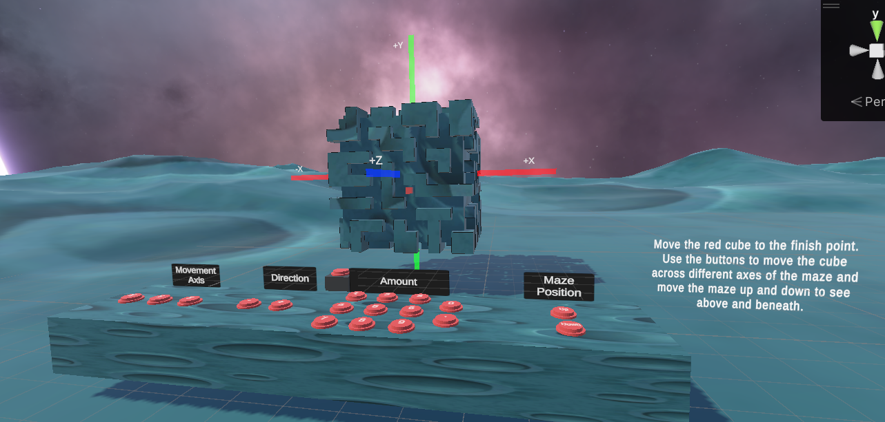
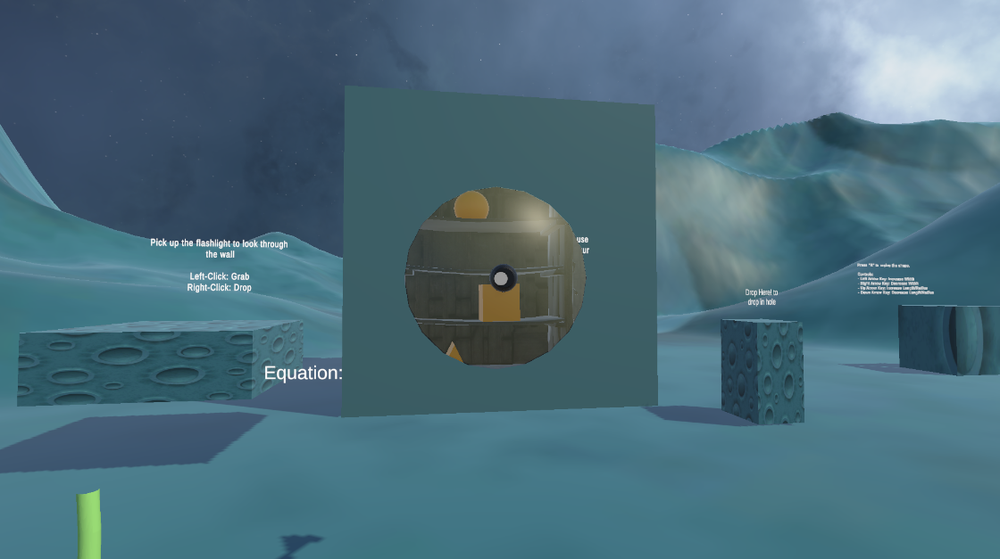
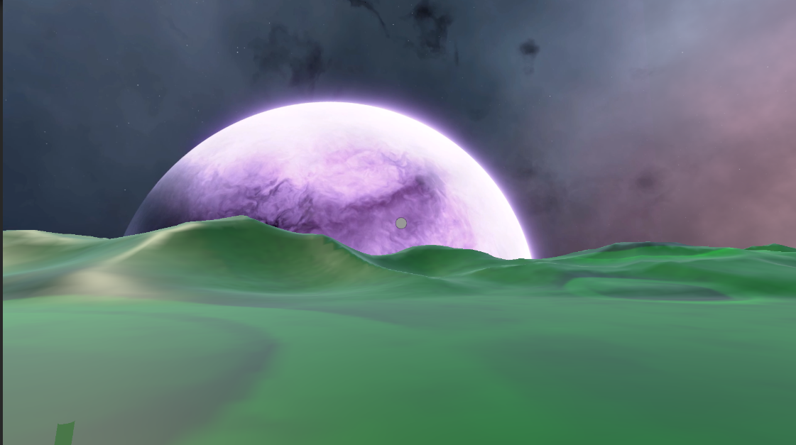
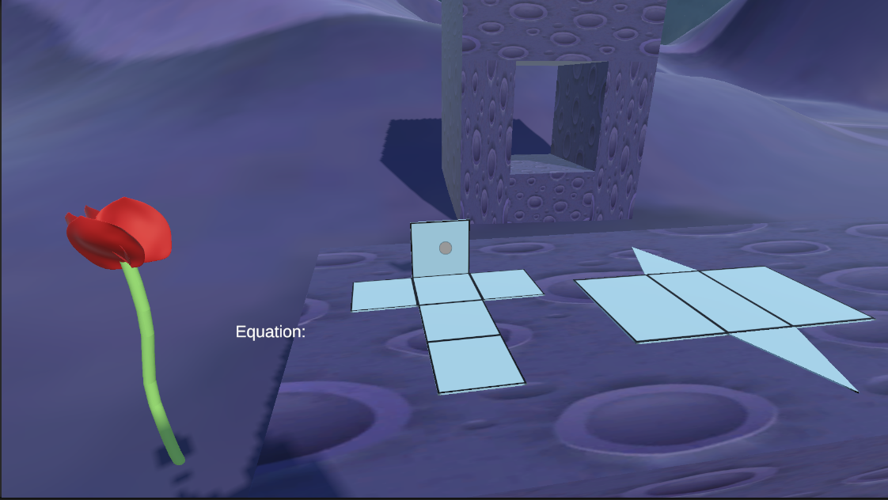
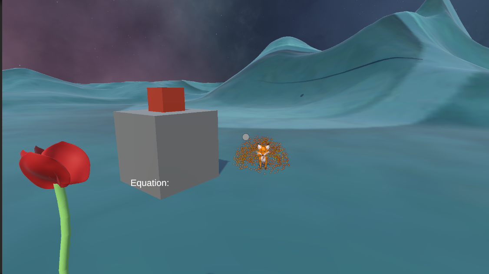

Math Puzzles - Unity
PROJECT TYPE
University Project - Unity, C#
Description
Math Games is an MR and PC game developed using Unity that is aimed at helping teachers and students to both teach and learn the more basic math concepts for those in middle school and similar ages. During the development of this project, we worked with a client who was a math professor to make sure that the project aligned with their needs and wants for the product. Rather than having complete freedom on what we wanted from this project it required us to learn how to work with external clients and work through compromises on both ends.
LAST UPDATED
2024
Development Team
- Zack Cornfield
- Thomas Stiles
- Jacob Mondi
- Milad Rakhshbahar
Project Planning and Tools
- Weekly meetings
- Trello
- Git with GitHub for source control
- GitHub Desktop
- Doxygen
- Microsoft Project
Trailer
Features Developed by Me
3D Maze Puzzle
Developed a challenging 3D maze puzzle that integrates mathematical concepts into gameplay. Players navigate through 3D floating puzzles, requiring the knowledge and application of movement along the 3D axis.
Menu System

Created an intuitive menu system that enhances user experience and navigation within the game. This system includes options for settings and levels, ensuring accessibility and ease of use for players.
Flashlight Puzzle
Designed an engaging flashlight puzzle mechanic where players use light to look through a cube to collect the right object for the current hole. When a user picks up a shape, they can put it onto the dropper and resize it, which incorporates the math concept of 2D dimensions for various shapes, including circles, cubes, and triangles.
World/Level Design for PC
Crafted captivating and visually appealing world and level designs that complement the gameplay mechanics. Each level presents unique challenges and puzzles, encouraging players to apply mathematical reasoning in diverse environments.
Rose Logic
Implemented rose logic, which goes with the back story of the game from the story "The Little Prince". The rose is used to symbolise and represent how many puzzles the player has completed and gives the player a clear goal of completing the rose. When the player completes a puzzle, and effect occurs, which gives them a new petal.
Sound System
Engineered a dynamic sound system that enhances immersion and gameplay experience. This system includes ambient sounds, puzzle-solving cues, and interactive audio elements, enriching the overall atmosphere of the game. WIth the help of Milad we also introduced a Fox system which talks to the player and gives them quick insight on what to do.
Game Logic
Developed the core game logic that governs puzzle mechanics, player interactions, and progression. This includes implementing mathematical rules and algorithms to ensure challenging yet rewarding gameplay experiences for players.